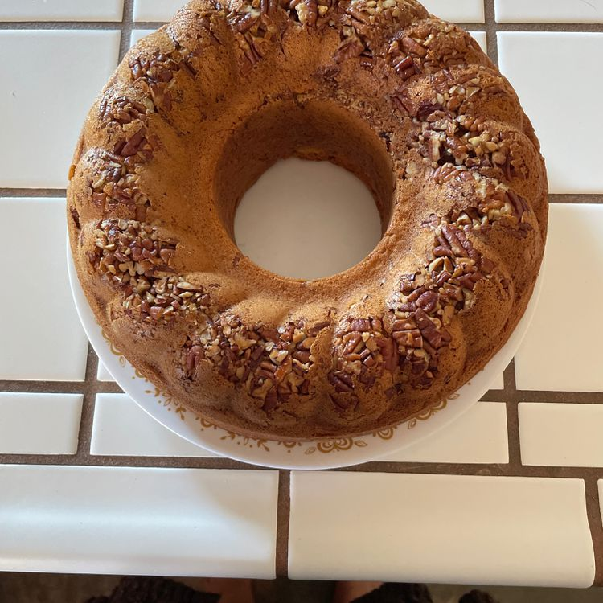

Irish Cream Bundt Cake

Description:
This glazed Baileys Irish cream cake is great tasting and excellent for any occasion
Ingredients:
- cooking spray with flour
- 1 cup chopped pecans
- 1 (15.25 ounce) package yellow cake mix
- 1 (3.4 ounce) package instant vanilla pudding mix
- 4 large eggs
- 3/4 cup Irish cream liqueur
- 1/2 cup vegetable oil
- 1/4 cup water
Steps:
- 1 cup white sugar
- 1/2 cup butter
- 1/4 cup water
- 1/4 cup Irish cream liqueur